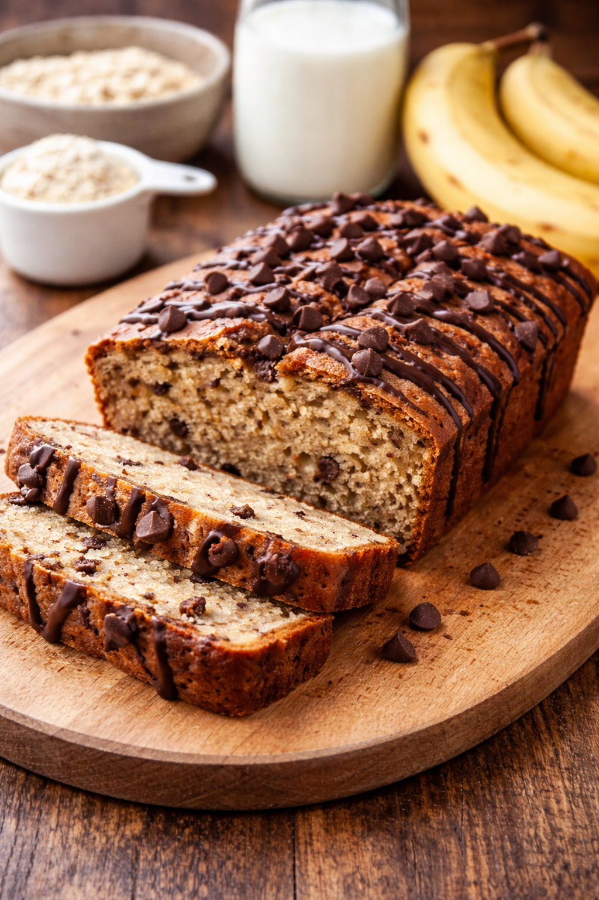
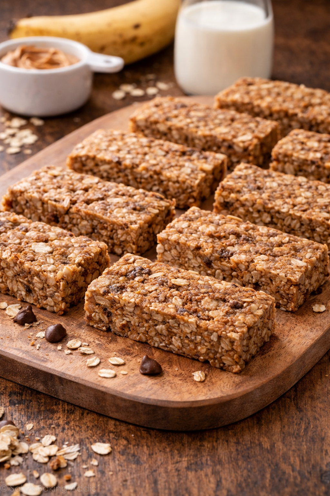
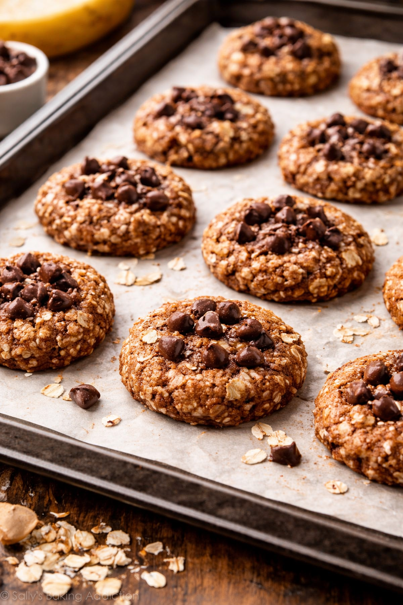

Que quieres comer hoy?
Torta
- Pisá las bananas.
- Agregá los huevos y mezclá.
- Sumá la avena, la proteína, el polvo para hornear y un poco de leche.
- Mezclá hasta que quede una masa espesa.
- Ponelo en un molde chico.
- Horno 25 a 30 min a fuego medio, o microondas 4 a 6 min.

Barrita de cereal
- Pisá las bananas.
- Agregá la avena, la proteína y la mantequilla de maní.
- Sumá un poco de leche si queda muy seco.
- Mezclá bien hasta formar una pasta.
- Poné la mezcla en un molde o taper chico.
- Aplastá bien y llevá al horno 15 a 20 min, o a la heladera hasta que tome forma.
- Cortá en forma de barritas.

Galletitas
- Pisá la banana.
- Agregá el huevo y mezclá.
- Sumá la avena y la proteína.
- Mezclá hasta que quede una masa.
- Hacé bolitas y aplastalas en una fuente.
- Horno 15 a 20 min a fuego medio.
